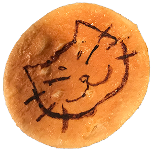

WORK
「SHARE CIRCLE」
個人間の洋服シェアリングサービスを想定した
ウェブサイトを制作しました。
担当範囲：デザイン、写真撮影・レタッチ（商品写真）、画像収集（商品画像以外）、制作
制作期間：2週間...追加実装中
「ねことあそぶ」
PHPとJavaScriptでボタンをタップするだけの
ブラウザゲームを制作しました。
レスポンシブ対応済です。
プレイ時間は3分程、早ければ30秒以内です。
担当範囲：デザイン、画像収集・編集、制作、動作確認
制作時間：30時間 (内、レスポンシブ対応：15時間)
広告バナー制作
リーダーボードサイズとミディアムレクタングルサイズのバナーを制作しました。
担当範囲：デザイン、撮影(野菜宅配バナーのみ)、画像加工、コピーライティング、制作
制作時間：１枚につき3時間～５時間
ABOUT

成澤 麗子（なりさわ れいこ）
Webデザインからフロントエンド実装まで
一貫して請け負えるエンジニア。
「妥協しない丁寧な制作」がモットー。
SI業界業務アプリエンジニアを7年経験、
2020年1月現在、
Web業界への転職活動中。
■ できること ■
開発スキル
HTML5、CSS3、JavaScript、PHP、
Adobe DreamWeaver、WordPress
COBOL、SQL(Oracle PL/SQL、DB2)、
VBA(Excel、Access)、ShellScript
ウォーターフォール型開発は
各工程一通り経験。
バッチ処理開発を主に担当。
業務システム運用の経験も有。
デザインスキル
Adobe Photoshop、Illustrator、
XD、Premiere
EDIUSでの編集経験も有
最近AfterEffectsの学習を開始。
■ 好きなエディタ ■
サクラエディタ